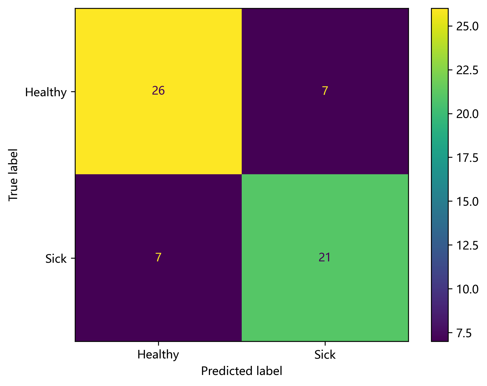
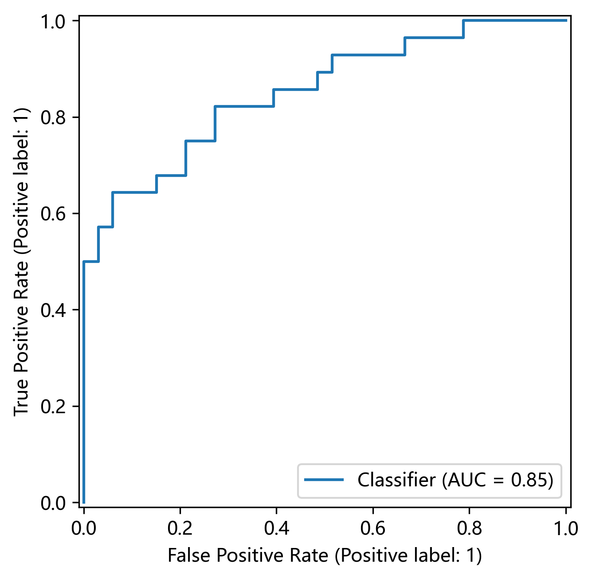
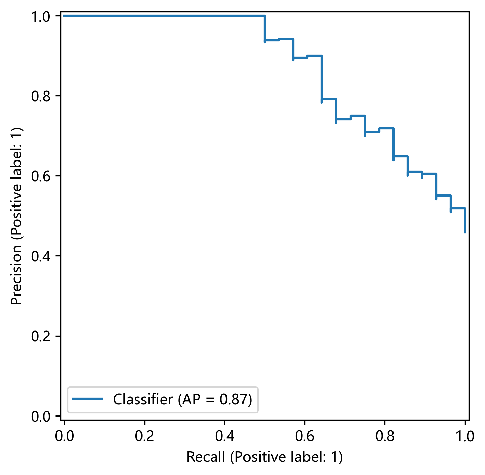

1. 数据与任务
- 数据文件：
work.xls
- 标签（y）：结果列（Healthy=0，Sick=1）
- 特征（X）：年龄、性别、胸痛类型、静息血压、血清胆固醇、空腹血糖、心电图、最大心率、运动引起绞痛、峰值、斜度、缺损等
2. 预处理与建模
- 数值变量：中位数填补 + 标准化（StandardScaler）
- 分类变量：众数填补 + One-Hot 编码（handle_unknown=ignore）
- 模型：Logistic Regression（Pipeline + ColumnTransformer）
- 划分：训练/测试（stratify=y）
3. 统计分析（显著性检验）
- 数值变量：Mann–Whitney U
- 分类变量：卡方检验（必要时 Fisher）
- 结论写法示例：与 Healthy 组相比，Sick 组在最大心率、峰值、年龄等变量上差异显著（p<0.05）；空腹血糖差异不显著（p≥0.05）。
4. 模型评估与可视化

图 1：混淆矩阵（Confusion Matrix）

图 2：ROC 曲线（ROC Curve）

图 3：PR 曲线（Precision-Recall Curve）
5. 复现说明
- 环境：Python + pandas + scikit-learn + matplotlib
- 核心流程：读取数据 → 清洗/编码 → 统计检验 → 建模 → 输出图表与 PDF
- 更多细节请见：report.pdf